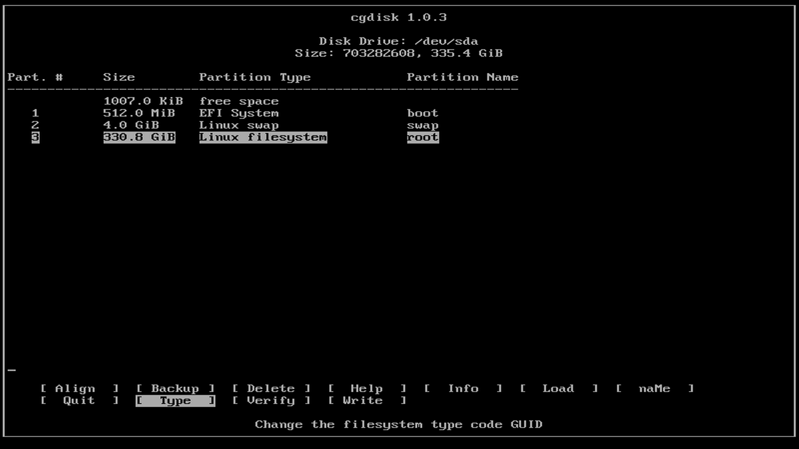

Content Map
Quick Search
Clear Linux partitioning using CGDISK
These instructions guide you through the initial setup of your hard drive partitions using the cgdisk utility as part of the Clear Linux manual installation process. If you do not wish to continue creating your own partitions, return to the bare metal manual installation.
Prerequisites
This guide assumes that you have followed the Install Clear Linux OS on bare metal guide and intend to install Clear Linux manually by choosing the < Manual(Advanced) > menu item on the Choose Installation Type Clear Linux Installer setup menu as shown in figure 1:

Figure 1: Choose installation Type
Partition using CGDISK
We use the cgdisk application to create a GPT since Clear Linux only supports the UEFI specification. For a complete description of the cgdisk utility and how to use it, visit Rod Smith’s website for a GPT fdisk tutorial.
In this guide, we intend to use an unpartitioned hard drive for the Clear Linux installation.
On the Choose partitioning method menu, shown in figure 2, select the < Manually configure mounts and partitions > menu item to manually partition your hard drive.

Figure 2: Choose partitioning method
The screen then shows the current device on your system you can partition. In this example, shown in figure 3,
/dev/sdais available but does not have any partitions defined.Select the < Partition /dev/sda > menu item and press
Enterto begin the process of modifying this disk.
Figure 3: Choose a drive to partition using cgdisk tool
The cgdisk application starts and displays the settings for
/dev/sdaas shown in figure 4.
Figure 4: cgdisk
Linux Partition setup
In order to properly set up the Clear Linux partitioning scheme, we create three partitions using the cgdisk utility in the following order:
- EFI boot partition
- Linux swap partition
- Linux root partition
For a complete understanding of these partitions, you can review the Linux partitioning scheme information.
Create the EFI boot partition
With the free space highlighted in the cgdisk utility, you can either select the [ New ] button and press
Enteror press theNkey to define a new partition.The utility prompts you to enter the first sector. Press the
Enterkey to accept the default value shown.Note
In this example, the first sector starts at 2048. For more information about alignment using the cgdisk tool, see Rod Smith’s Partitioning Advice about alignment.
The program then prompts you for the size of the partition. To create a 512MB partition, enter 512M and press
Enteras shown in figure 5:
Figure 5: cgdisk - New partition
To define the type of partition, the cgdisk utility has pre-defined partition types. Press the
Lkey to show the hex codes you can use. Use these codes to set the correct GUID for GPT partition types as shown in figure 6:
Figure 6: cgdisk - hex codes for partition types
We need to use the following three codes for our partitions:
- ef00 - EFI System
- 8200 - Linux swap
- 8300 - Linux filesystem
To create the EFI boot partition, enter
ef00as the hexcode for this partition and pressEnter.To name the partition, enter
bootand pressEnterto finish setting up the EFI boot partition. The utility shows the first partition as anEFI System512MiB partition namedbootas shown in figure 7:
Figure 7: cgdisk - boot partition defined
Create the Linux swap partition
Next, we must create the Linux swap partition. In figure 7, notice the two areas defined as free space. We created the first 1007.0 KiB free space area when we started the EFI boot partition at sector 2048. For more information about it, review Rod Smith’s Partitioning advice about alignment.
Move your cursor to highlight the larger free space of 334.8 GiB at the bottom of the partition list before you begin to create the Linux swap partition as shown in figure 8:

Figure 8: cgdisk - free space selection
To create the Linux swap partition, with the largest free space highlighted, select the [ New ] button or press the
Nkey and enter the following values for the Linux swap partition:First sector: press :kbd:`Enter` to select the default value Size in sectors: 4G Hex code or GUID: 8200 Enter new partition name: swap
Your cgdisk partition list should now look like figure 9.

Figure 9: cgdisk - swap partition defined
Create the Linux filesystem partition
Lastly, we must create the the Linux filesystem partition to use it as the root mount point for you Clear Linux installation.
Highlight the largest free space entry at the bottom of the list and select the [ New ] button or press the
Nkey and enter the following values to create the Linux filesystem partition:First sector: press :kbd:`Enter` to select the default value Size in sectors: press :kbd:`Enter` to select the default value, which is the remainder of available space on the disk Hex code or GUID: 8300 Enter new partition name: root
With all the partitions now defined, you should see a list similar to what is shown in figure 10:
Figure 10: cgdisk - defined partitions
If you are satisfied that the partition scheme is correct, you need to write this GPT to the hard drive. Select the [ Write ] button or press the
Wkey and the cgdisk program prompts with:Are you sure you want to write the partition table to disk? (yes or no)Enter
yesand pressEnterto write this data to the hard drive and then select the [ Quit ] button or pressQto exit the cgdisk utility.You see the partitions that were created as shown in figure 11. Move your cursor to the < Next > button and press
Enter.
Figure 11: defined partitions
{kind=link}
Set the mount points
The Set mount points menu sets the mount points that the Clear Linux installer uses for your Clear Linux installation and is shown in figure 12.

Figure 12: Set mount points
In this menu you need to set the mount points for the boot and root partitions and select to format them.
Highlight the EFI System partition type menu entry and press the
Enterkey to edit this item. The Set mount point of sda1 menu is be shown.- For the Enter mount point: type /boot and press
Enter. - Enable formatting the partition by checking the [ ] Format toggle field.
Figure 13 shows the entered information. Select the < Yes > button and press
Enter.
Figure 13: Set mount point of sda1
- For the Enter mount point: type /boot and press
Do the same for the Linux filesystem partition by highlighting the Linux filesystem menu entry and entering the information shown in figure 14 to set the Enter mount point: to
/and enable formatting:
Figure 14: Set mount point of sda3
The final Set mount points menu item looks like figure 15:

Figure 15: Set mount points completed
Select the < Next > button and press
Enterto proceed to the Warning! menu to accept your changes as shown in figure 16.
Figure 16: Warning
Highlight the < Yes > button and press
Enterto accept these changes and move on to the next step of the Clear Linux manual install process.This completes the process of manually setting up your hard drive partitions and you can now continue with the Clear Linux manual install.